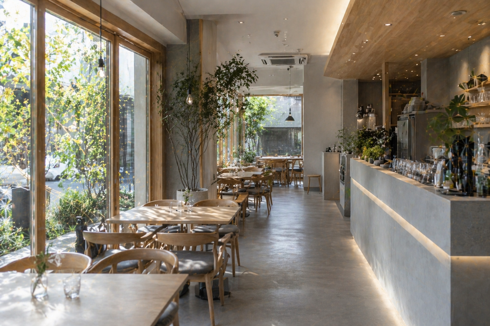
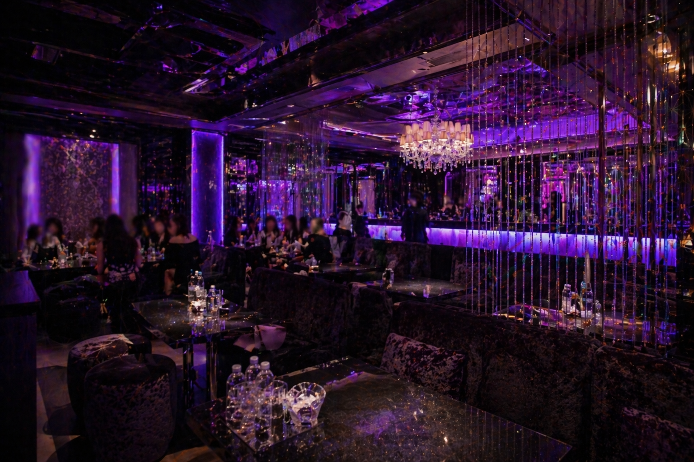

多様な現場で培った、実務ベースの対応力
業界ごとに異なる要件や運用方針に向き合いながら、安定性・見やすさ・使いやすさを重視して整えてきました。


About
官公庁、教育機関、情報通信、金融、個人向け制作など、異なる現場に応じて構築・運用・改善を積み重ねてきました。
Engineer Aya
インフラ実務を軸に、安定運用・監視・障害対応・小規模Web制作まで一貫して支える、実務寄りのエンジニアです。
対応できる技術領域
Windows・Linux混在環境における構築・運用を軸に、監視、ログ管理、更新管理、仮想基盤、証明書運用、障害切り分け、 さらに営業用ランディングページや問い合わせ導線整備まで、実務で必要になる領域を横断して対応しています。
インフラ基盤
Linux
RHEL 9
Ubuntu Server
AlmaLinux 9
Windows Server 2019 / 2022
VMware ESXi
Proxmox VE
ネットワーク / ディレクトリ
DNS
DHCP
Active Directory
GPO
WSUS
FSRM
監視 / 運用 / セキュリティ
Zabbix
Syslog
Rsyslog
logrotate
HTTPS
TLS
証明書管理
障害切り分け
Webデザイン / 開発
HTML
CSS
JavaScript
WordPress
Apache
MySQL
MariaDB
Git
GitHub
LP制作
Webデザイン
レスポンシブ対応
フォーム実装
SSL設定
Works
作業の羅列ではなく、目的・構成・運用まで含めて伝わるように整理しています。
情報通信業向け 監視基盤構築（Zabbix）
Windows Server約50台を対象とした監視基盤として、Linux上にZabbix Serverを新規構築。 監視対象の可視化、障害検知の迅速化、通知運用の整備まで含めて対応しました。
- Linuxサーバ設計・構築
- Zabbix / DB / Webフロントエンド導入
- 監視テンプレート設計・適用
- メール通知・障害検知ルール設定
- 疎通確認および動作検証
教育機関向け LAMP＋WordPress構築
学生・教職員向け情報発信とコンテンツ管理を目的に、LAMP環境上でWordPressサイトを構築。 公開後の運用も見据えて、基本設定と権限まわりを整備しました。
- LAMP環境構築
- WordPress導入・初期設定
- 権限・運用まわりの整備
- 基本動作確認と公開対応
官公庁向け Syslog統合管理＋WSUS構築
セキュリティログの長期保管とWindows更新統制を目的に、ログ統合基盤とWSUS環境を構築。 保守性と運用継続性を意識して整備しました。
- Rsyslog / logrotate設定
- 長期保管運用の整備
- WSUS構築
- GPOによる配布設計
金融系 IaaS移行支援
老朽化したサーバ資産のIaaS移行に伴い、構築パラメータ整理、試験項目設計、設定確認などを支援。 安全性と見落とし防止を意識した進行で対応しています。
- OS / ミドルウェア設定整理
- 試験シート作成
- ファイアウォール・ポート確認
- 運用観点のレビュー
エンタメ業界向け プロモーションLP制作
イベント参加者向けに、集客・問い合わせ導線を意識したランディングページを制作。 スマホ最適化、SSL設定、フォーム導線整備まで一括対応しました。
- LPデザイン制作
- レスポンシブ対応
- SSL設定
- フォーム実装
- 公開対応
小規模案件向け 技術導線整備
個人・小規模事業者向けに、問い合わせ導線、公開設定、見た目の調整、実務で困らない最小構成の整備を支援。 技術と営業のあいだを埋める設計を得意としています。
- 問い合わせ導線整備
- 公開設定サポート
- 表示崩れ・軽微修正
- 小規模サイト改善
Contact
インフラ構築、監視設計、障害切り分け、Webサイト制作のご相談を受け付けています。 小規模案件や技術相談ベースでも対応可能です。
まずは概要だけでも大丈夫です。目的、困っていること、希望納期などをわかる範囲でお送りください。
お問い合わせ内容は aya.engineer@outlook.jp 宛に届くよう設定しています。
可能な限り迅速に対応いたします。
案件後はLINE,電話番号を共有する場合があります。
案件後はLINE,電話番号を共有する場合があります。